Tutorial: your first game
A four-player Retake game: you and three bots. In fifteen minutes you will see a whole round, with its situation, attacks, cards and missiles.
1. Create the table
Open the game (ted.cmd on Windows,
./ted on Linux) and go to the host panel. Under
Create a game, choose Retake and 4
players, and press Create game.
In the Invite your friends box, choose 3 under Bots and leave the duration at No limit. Then press I will play too.
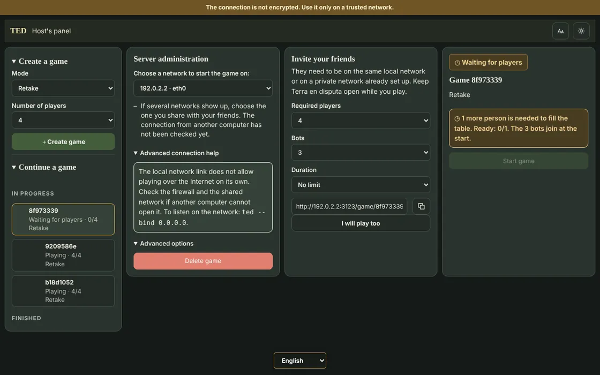
2. Join the table
Type your nickname, pick a color and press Join. In the waiting room, press I'm ready.
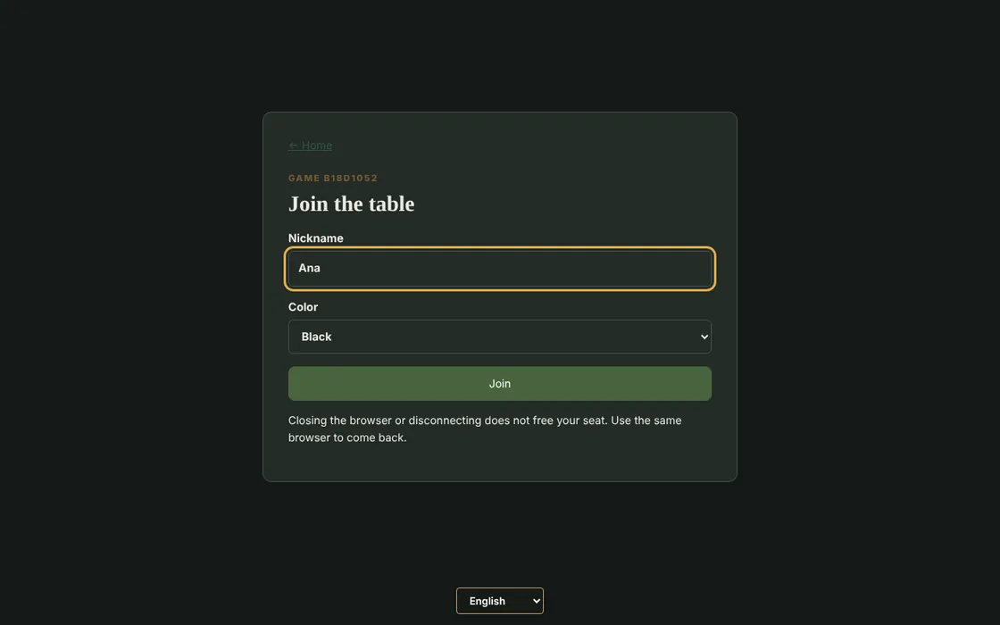
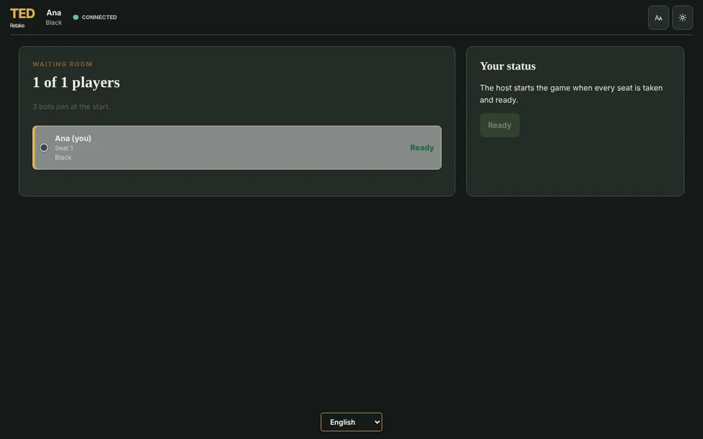
Go back to the host panel and press Start game. With friends it works the same way: each one opens the invitation link, joins and marks themselves as ready.
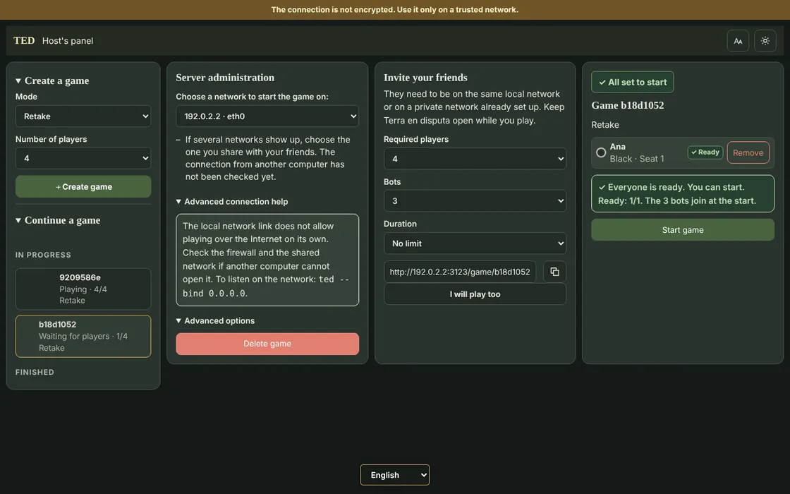
3. Place your first armies
The 72 countries are already dealt, with one army in each. The Initial placement menu opens at the bottom left: choose a country under Destination, add armies with + and repeat until your reserve reaches zero. Then confirm with the button on the right or with Enter.
You place 8 armies first and, in a second pass, 4 more. A tip: keep your armies in a few countries, close to a continent you want.
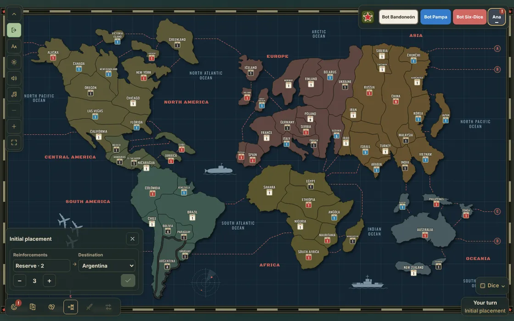
4. Check your objective
Press the first button on the bottom bar or the O key. Your objective is secret: besides completing it, you also win by holding 45 countries.
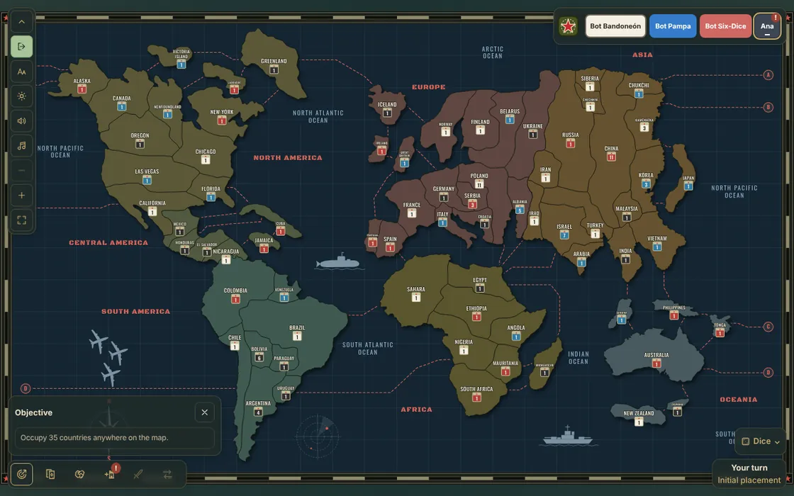
5. The round's situation
Every round starts with a situation card that changes the rules until the round ends. It shows up at the top right and stays at the bottom, next to the turn indicator. To read it again, press the indicator or the S key.
For example, with Open borders attacks are only allowed between countries on different continents. If none of your countries can attack, the menu says so and you can end your attacks.
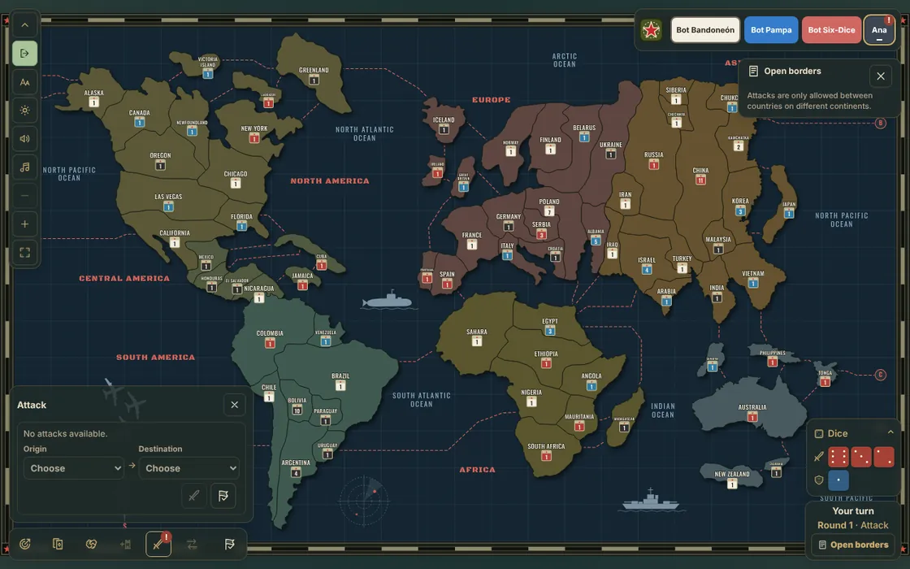
All the situations are on the Retake page.
6. Attack
Once everyone has placed, each player plays a first attack-only turn, the first hostility. Open the Attack menu, choose one of your countries with 2 or more armies as Origin and an enemy neighbor as Destination. Then press the sword button or Enter.
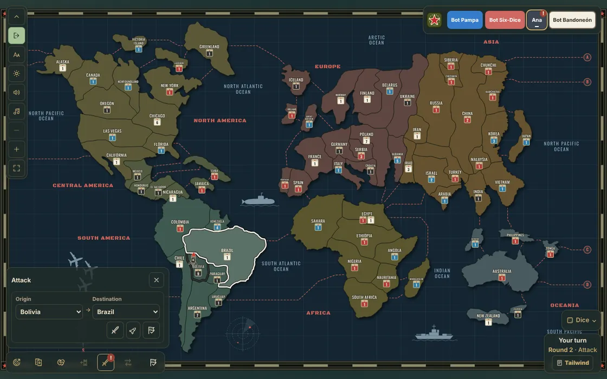
The dice show in the Dice panel at the bottom right: red for the attack and blue for the defense. They are compared from highest to lowest, and the defender wins ties. If you have at least twice the defender's armies and they have 3 or more, you roll 4 dice.
If the enemy country runs out of armies, you conquer it and choose how many armies to move in, from 1 to 3.
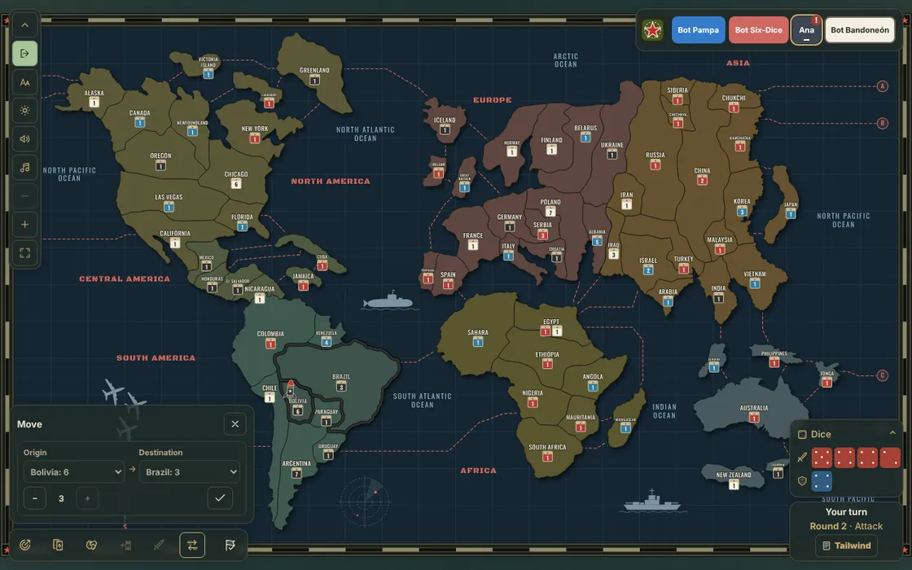
You can keep attacking as much as you like. When you are done, press the flag button, End attacks.
7. Regroup
In the Move / Regroup menu you can move armies between your neighboring countries to strengthen your borders. Confirm each move and, at the end, press End regroup.
8. Request your card and end your turn
If you conquered at least one country, press Request country card in the Cards panel (C key). Later on, three cards can be exchanged for armies, and if the card's country is yours you collect 3 armies there. To finish, press the flag button on the bar, End turn.
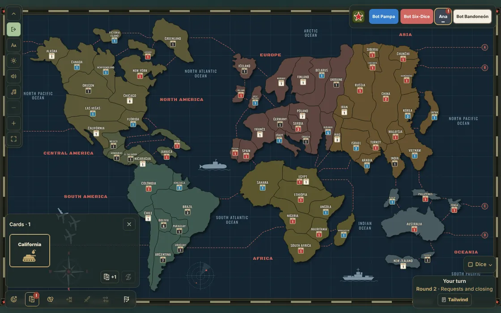
While the others play, the map highlights the countries in each attack and the dice show at the bottom right.
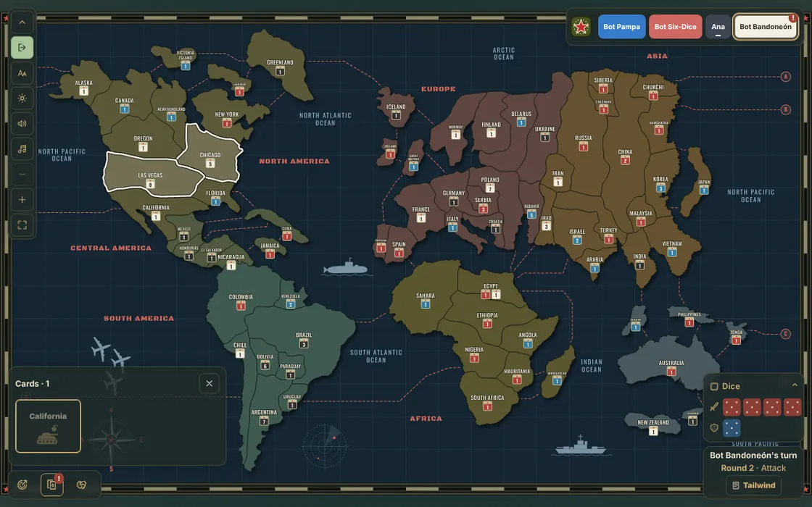
9. Reinforcements and missiles
From the second round on, after the situation, everyone places reinforcements in turn. You get half your countries in armies, at least 4, plus the extras for the continents you control. You place them as at the start, in the Exchange and reinforcements menu.
This is also where missiles are built. With a country chosen, the missile's +1 button turns 6 armies in that country into 1 missile. At least one army must stay in the country.
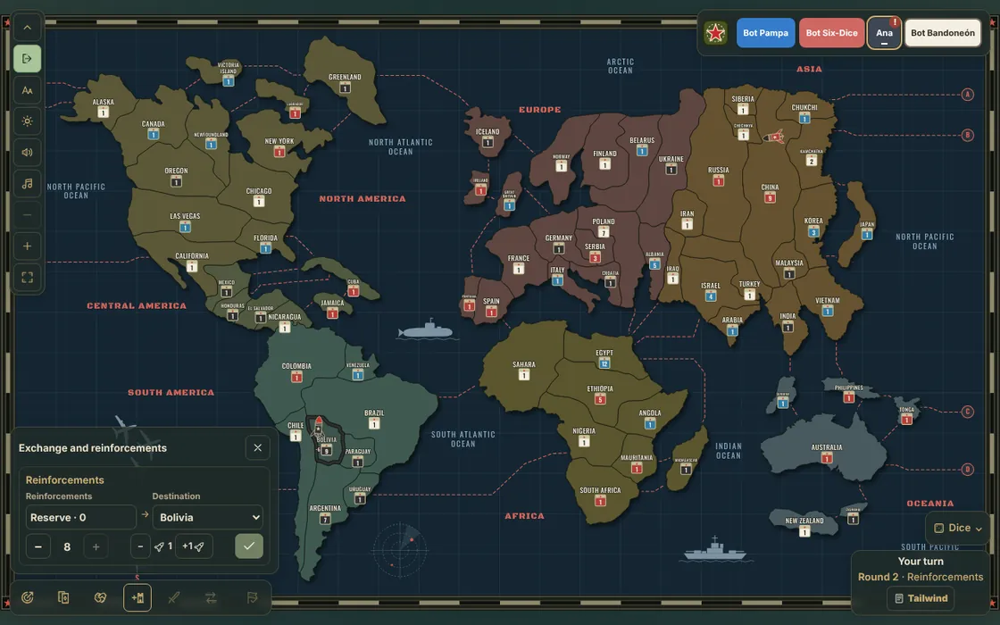
10. Fire a missile
On your attack turn, press the rocket button in the Attack menu, or the M key. Choose the country with the missile and an enemy country 1, 2 or 3 steps away, and press Fire missile. It removes 3, 2 or 1 armies depending on the distance.
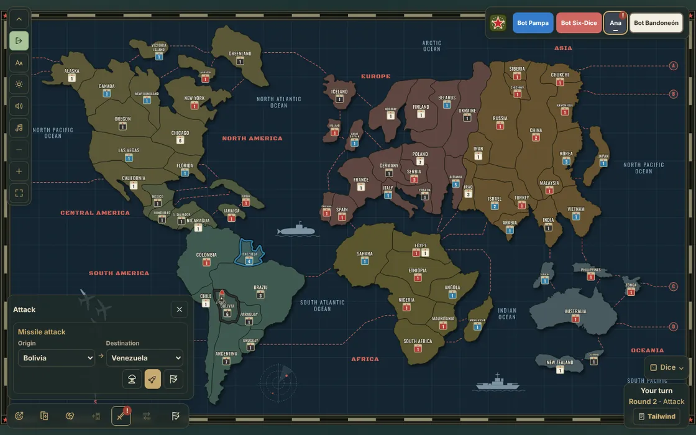
To fire, you need more missiles in your country than the defender has in theirs, and a missile never leaves a country empty.
11. Pacts
The Pacts panel (P key) lets you propose agreements. For example, a Between countries pact links one of your countries with one of the other player's: they can't attack each other and no missile crosses the path between them. The preview shows what you will propose before you send it.
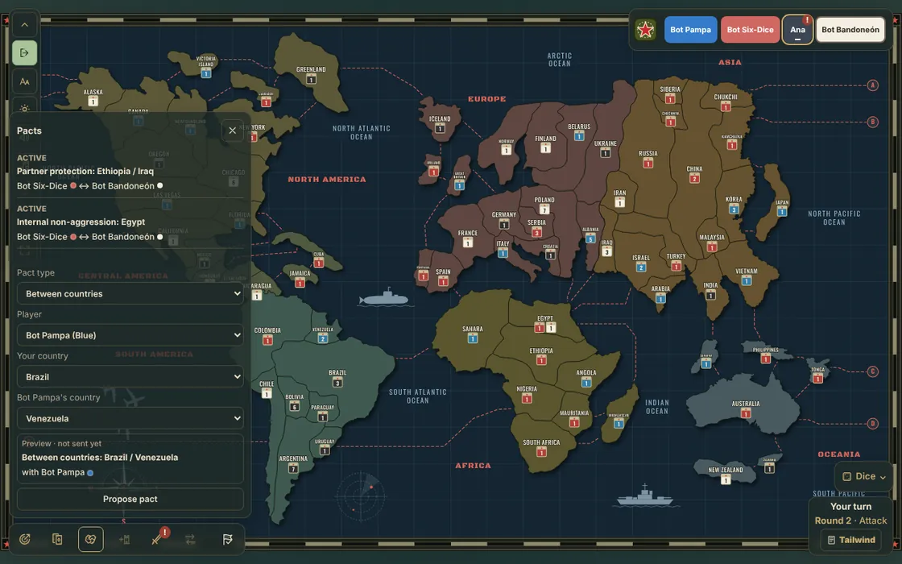
There are pacts for a continent, for a border or for the whole map, and alliances to attack together. They are all on the Retake page.
What next?
- The full rules are in Retake.
- To play with friends, see Create and join.
- Rather start with something simpler? Follow the Classic tutorial.